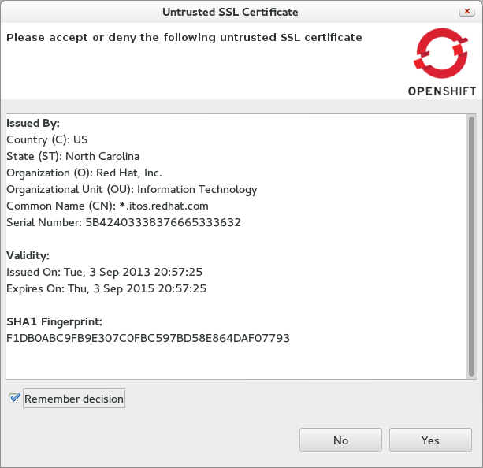
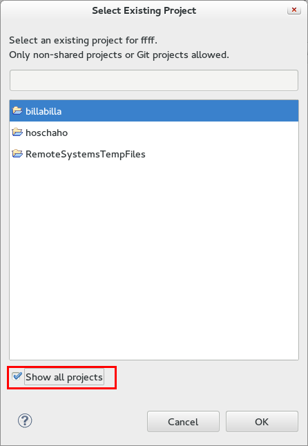

< JST/JSF/HTML Tools Forge Tools >
SSL Certificates |
|
| Untrusted SSL Certificates |
In case the server sends an SSL certificate that we cannot verify, we'll now present it to you. Allowing you to accept or refuse it.  |
Existing Projects |
|
| Show All Projects |
When creating a new OpenShift application you can choose to merge it with your existing workspace project. By default, the selection dialog will filter out projects that are shared with a non-git source control and internal Remote System Explorer projects. Nevertheless We'll show all projects if you check Show all projects.  |